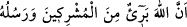

Şeyh Ebû Medyen’in arkadaşları arasında ileri gelenlerden olan Şeyh Mûsa
Sidrânî’nin menkıbeleri arasında yer aldığına göre Şeyh Mûsâ’nın bir gün ve gecede
yetmişbin hatimlik virdi vardı. Bu sözün anlamı şudur: Bir gün ve gece yirmi dört
saattir. Şu hâlde her oniki saatte otuzbeş bin hatim yapılıyor demektir. Çünkü bu süre ya
kırk üç sene dokuz aya uzanır ya da daha fazlasına. Birinci takdire göre bir gün ve gece
seksen yedi seneye ve altı aya tekabül etmiş olur. Böylece her gün ve gecede iki hatim
yapılmış demektir, bunlardan biri gündüz ve diğeri de gece hatmidir, nitekim âdet bu
şekildedir.
Yukardaki sözü şu şekilde yorumlamak da mümkündür. Yukarda işâret edilen süre
daha az olabilir. Zira Kur’an okuyan bunu daha hızlı okumuş olabilir. Hadr kırâat biçimi
kırâat âlimlerinden İbn Kesir’in, Ebû Amr’ın ve Kâlûn’un tercih ettikleri okuma
türüdür.
Tedvire gelince; bu, tertîl ile hadr arası orta hızda bir okuma tarzıdır. Bu okuyuş tarzı
İbn Âmir ve Kisâî’nin tercih ettikleri okuyuş türüdür. Bu üç okuma çeşidi Kur’an’ı
okurken harfleri uzatmanın ölçüsünde tasavvur edilir. Bir hadis-i şerifte Peygamber
Efendimiz (s.a.) şöyle buyurur: “Nice Kur’an okuyanlar vardır ki Kur’an onlara lânet
eder” Bu hadis-i şerif, Kur’an’ın lafızlarını ya da mânâlarını bozan veya onunla amel
etmeyen kimselerin durumunu belirtmektedir. Bu da kırâat esnâsında “lahn”e bağlıdır.
Lahn; celi/açık ve hafi/gizli çeşitlerine ayrılır. Açık lahn lafza ârız olan ve mânâyı
bozan hatâdır. Bu çeşit hatâda Kur’an’ı okuyan kimse bir harfin yerine bir başka harfi
okur. Sözgelimi; “sâlihât” yerine “tâlihât” demek gibi. Yine ister mânâ değişmiş olsun,
isterse değişmesin esre okunacak bir harfi, ötre veya üstün okumak bu türden bir
hatâdır. “ (et-Tevbe, 9/3) âyetindeki “rasûluhû”yu, “rasûlihî”
okumak da buna örnektir.
Hafi/gizli lahne gelince; kurallara ve okuma esnâsında örfe uymamak demektir. İhfâ ve
idğâmı, izhâr ve kalbi terketmek, kalın okunması gerekeni ince, ince okunması gerekeni
kalın okumak, çekilmemesi gerekeni çekmek, çekilmesi gerekeni de çekmemek, gizli
lahn örnekleridir. Kuşkusuz gizli lahn çeşidi sonunda şiddetli azâbı gerektiren farz-ı ayn
değildir. Bunda sâdece tehdîd ve cezâ korkusu söz konusudur.
Âlimlerden birisi şöyle der: Gizli lahn ancak mâhir Kurrâ’nın fark edebileceği lahn
çeşididir. Ra’ların tekrar edilmesi, nunların tınılanması, ince okunması gereken yerde
lam’ların kalın, kalın okunması gereken yerlerde râ’ların ince olarak okunması bunlara
örnektir.
Bu çeşit lahnda bunları işleyene azap verileceği düşünülemez. Çünkü bunu herkesten
istemekte meşakkat vardır. “Allah hiç bir nefse taşıyamayacağı yükü yüklemez.” (el-
Bakara, 2/286)
Tarikat-ı Muhammediyye şerhlerinden birinde şöyle deniyor: Köylülere, bedevilere,
koca karılara, köle ve câriyelere; “tecvidsiz namaz kılmak câiz değildir” demek fitne
çıkarmaktır. Çünkü onlar tecvidi beceremezler ve namazı temelli bırakırlar. Şu hâlde